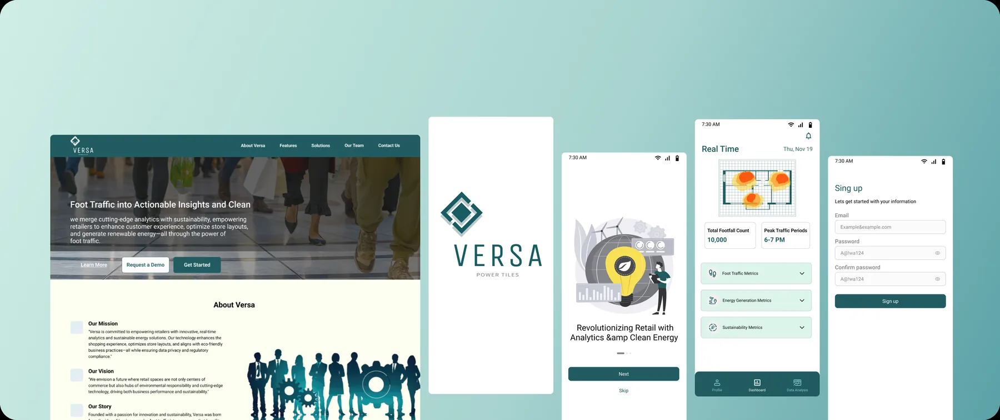
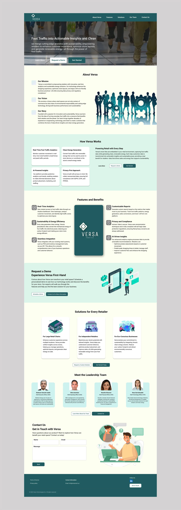
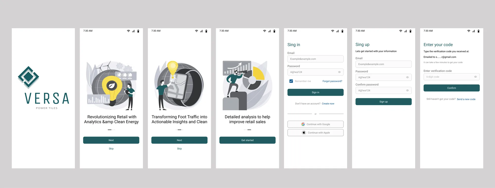
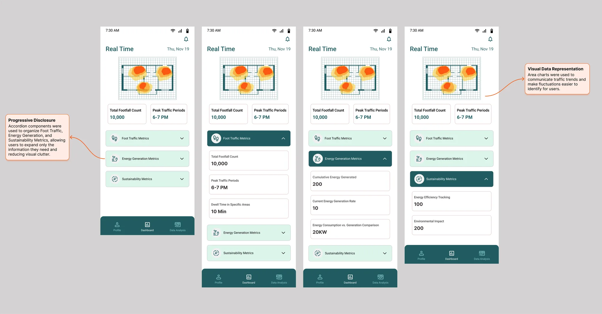
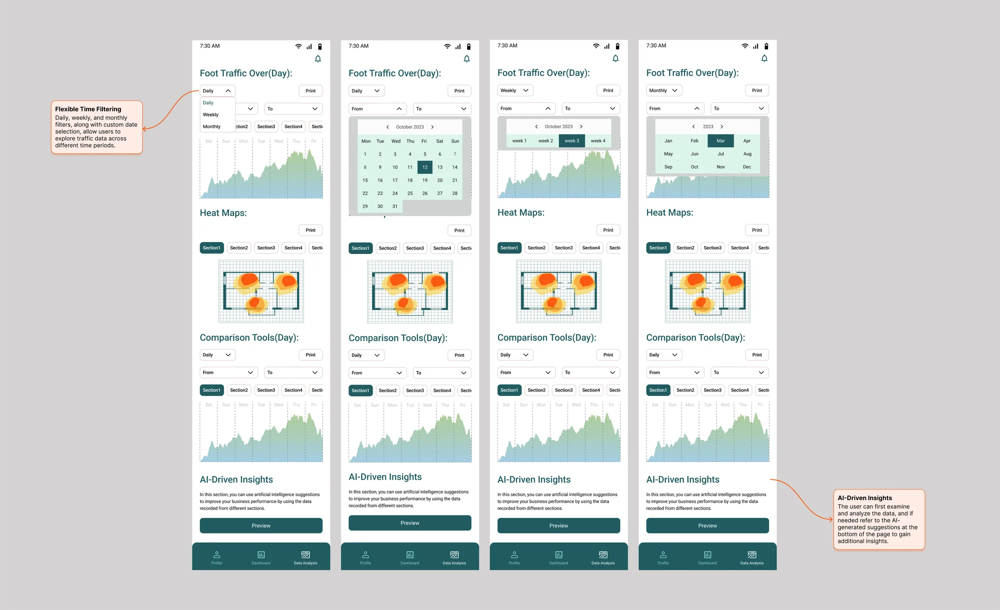
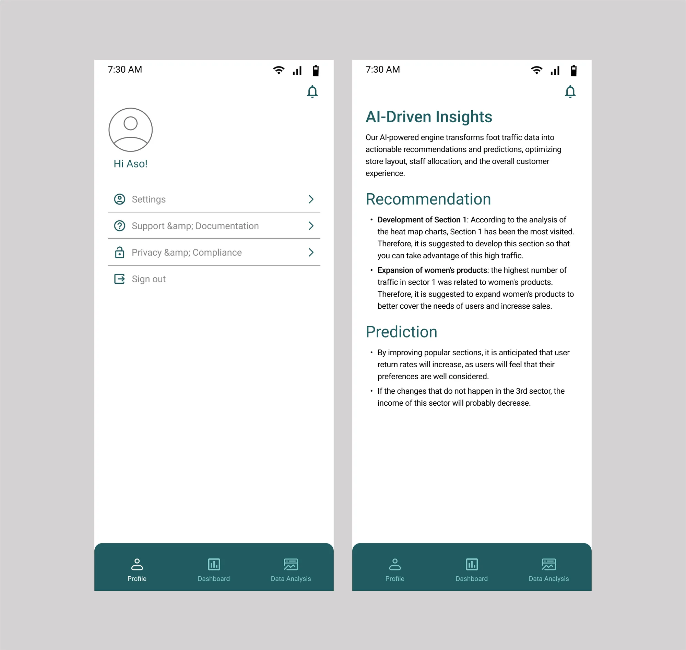

Versa

- Role
- UI Designer
- Timeline
- 14 days
- Tools
- Figma
- Approach
- Competitive Analysis & UI Design
About Project
Versa is a retail analytics and sustainable energy platform. Based on a predefined proposal and feature set, I conducted a competitive analysis and completed the UI design of the product website and mobile application within 14 days.
Design Scope:
- Product Landing Page
- Mobile App Onboarding & Authentication (Login / Sign Up)
- Multi-section Dashboard
- User Profile





Next Steps
- Test the designs with a group of real users and collect their feedback.
- Revise the designs based on what the users say.
- Run a second round of testing to check that the changes worked.